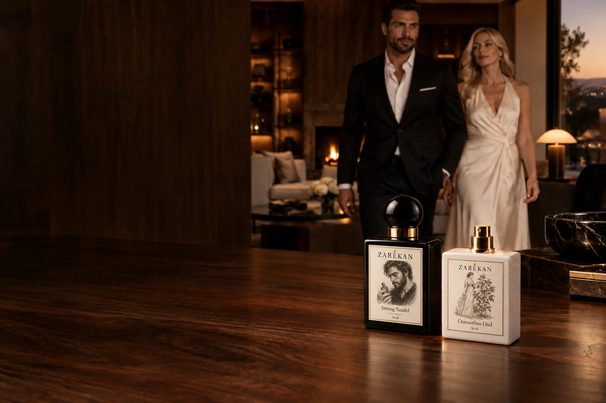
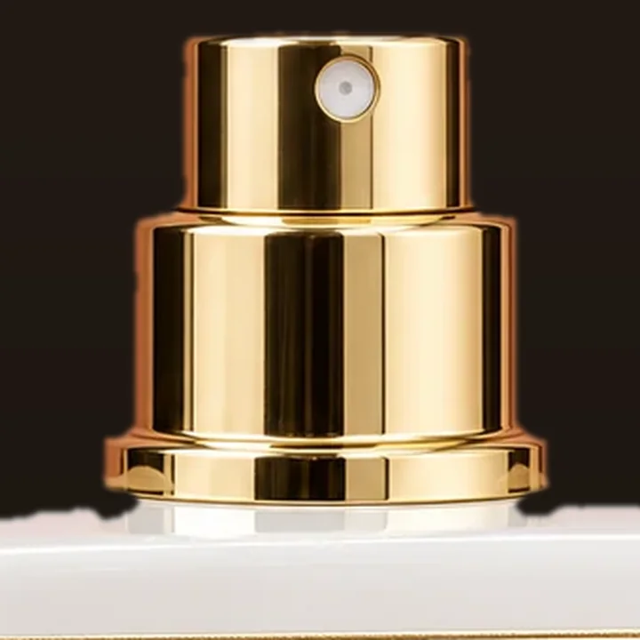
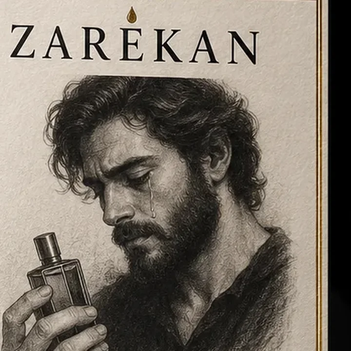

![](data:image/svg+xml,%3Csvg%20xmlns%3D%22http%3A%2F%2Fwww.w3.org%2F2000%2Fsvg%22%20viewBox%3D%220%200%2064%20100%22%3E%3Cdefs%3E%3ClinearGradient%20id%3D%22edge%22%20x1%3D%220%22%20y1%3D%220%22%20x2%3D%221%22%20y2%3D%22.6%22%3E%3Cstop%20stop-color%3D%22%23fffdf5%22%2F%3E%3Cstop%20offset%3D%22.24%22%20stop-color%3D%22%23d9d6cc%22%20stop-opacity%3D%22.85%22%2F%3E%3Cstop%20offset%3D%22.56%22%20stop-color%3D%22%23a39a8b%22%20stop-opacity%3D%22.25%22%2F%3E%3Cstop%20offset%3D%22.78%22%20stop-color%3D%22%23f2eee3%22%20stop-opacity%3D%22.8%22%2F%3E%3Cstop%20offset%3D%221%22%20stop-color%3D%22%23fffef6%22%2F%3E%3C%2FlinearGradient%3E%3CradialGradient%20id%3D%22water%22%20cx%3D%22.28%22%20cy%3D%22.35%22%20r%3D%22.78%22%3E%3Cstop%20stop-color%3D%22%23ffffff%22%20stop-opacity%3D%22.78%22%2F%3E%3Cstop%20offset%3D%22.31%22%20stop-color%3D%22%23efe8dc%22%20stop-opacity%3D%22.24%22%2F%3E%3Cstop%20offset%3D%22.69%22%20stop-color%3D%22%2379756e%22%20stop-opacity%3D%22.14%22%2F%3E%3Cstop%20offset%3D%22.86%22%20stop-color%3D%22%23242a29%22%20stop-opacity%3D%22.6%22%2F%3E%3Cstop%20offset%3D%221%22%20stop-color%3D%22%23ece7dc%22%20stop-opacity%3D%22.93%22%2F%3E%3C%2FradialGradient%3E%3CradialGradient%20id%3D%22caustic%22%20cx%3D%22.52%22%20cy%3D%22.87%22%20r%3D%22.35%22%3E%3Cstop%20stop-color%3D%22%23fffef6%22%20stop-opacity%3D%22.96%22%2F%3E%3Cstop%20offset%3D%22.55%22%20stop-color%3D%22%23efe8dc%22%20stop-opacity%3D%22.35%22%2F%3E%3Cstop%20offset%3D%221%22%20stop-color%3D%22%23efe8dc%22%20stop-opacity%3D%220%22%2F%3E%3C%2FradialGradient%3E%3C%2Fdefs%3E%3Cpath%20d%3D%22M32%203C30%2024%2010%2043%207%2065C4%2084%2016%2096%2032%2096C48%2096%2060%2084%2057%2065C54%2043%2035%2024%2032%203Z%22%20fill%3D%22url(%23water)%22%20stroke%3D%22url(%23edge)%22%20stroke-width%3D%221.35%22%2F%3E%3Cpath%20d%3D%22M32%203C30%2024%2010%2043%207%2065C4%2084%2016%2096%2032%2096C48%2096%2060%2084%2057%2065C54%2043%2035%2024%2032%203Z%22%20fill%3D%22url(%23caustic)%22%2F%3E%3Cpath%20d%3D%22M24%2036C19%2046%2012%2057%2012%2067%22%20fill%3D%22none%22%20stroke%3D%22%23ffffff%22%20stroke-width%3D%223.2%22%20stroke-linecap%3D%22round%22%20opacity%3D%22.94%22%2F%3E%3Cellipse%20cx%3D%2214%22%20cy%3D%2273%22%20rx%3D%222%22%20ry%3D%223.7%22%20fill%3D%22%23ffffff%22%20opacity%3D%22.82%22%2F%3E%3Cpath%20d%3D%22M18%2085C27%2093%2045%2090%2050%2078%22%20fill%3D%22none%22%20stroke%3D%22%23fffef7%22%20stroke-width%3D%221.8%22%20stroke-linecap%3D%22round%22%20opacity%3D%22.92%22%2F%3E%3Cpath%20d%3D%22M37%2030C43%2042%2052%2054%2053%2063%22%20fill%3D%22none%22%20stroke%3D%22%23f7f5ee%22%20stroke-width%3D%22.9%22%20opacity%3D%22.5%22%2F%3E%3C%2Fsvg%3E)

Extrait de Parfum · Designprototyp
Strong Sandel
Sandelholz im Mittelpunkt. Grapefruit und Kardamom setzen frische, würzige Akzente.
- Sandelholz
- Grapefruit
- Kardamom
Extrait de Parfum · Designprototyp
Osmanthus Oud
Eine florale Idee mit weißem Tee und der dunklen Tiefe eines Oud-Akkords.
- Osmanthus
- Weißer Tee
- Oud-Akkord
Das Discovery Set
Beide Düfte entdecken.
Strong Sandel. Osmanthus Oud. Und ein dritter Duft, dessen Geschichte noch ein Geheimnis bleibt.
Zwei Begegnungen. Ein Geheimnis.
Set entdecken: Discovery SetSeitlich wischen oder ziehen · Pfeile: Duft wechseln.
Warum ZARÉKAN? Mehr als ein Duft. Ein Grund, in Erinnerung zu bleiben.
Ein Duft ist das, was von dir bleibt, wenn du den Raum verlässt. ZARÉKAN ist für Menschen, die ihn bewusst wählen: als Extrait de Parfum konzentriert komponiert, lange auf der Haut und so persönlich wie dein Stil.
- 25–30 %Duftölanteil
- 10+ Std.Haltbarkeit
- EuropaHerkunft des Duftöls
Produktangaben von ZARÉKAN.
Duftkonzentration
Extrait de Parfum. 25–30 % Duftöl.
Ein Eau de Parfum enthält üblicherweise etwa 10 bis 20 Prozent Duftöl. ZARÉKAN ist ein Extrait de Parfum mit 25 bis 30 Prozent: konzentriert komponiert, mit Tiefe vom ersten Sprühstoß an und einem Duft, der nicht nach dem ersten Termin verfliegt.
Haltbarkeit
Langanhaltend. Vom Morgen bis in den Abend.
Bis über zehn Stunden begleitet dich ZARÉKAN1: durch Termine, Begegnungen und den Moment, in dem es zählt.
- Der erste SprühstoßDein Tag beginnt. Dein Duft auch.
- MittendrinZwischen Terminen, Wegen und Begegnungen.
- Zehn Stunden späterNoch immer bei dir.
- Und darüber hinausFür den Abend, der zählt.
Illustration auf Basis unserer Produktangabe. Die Haltbarkeit hängt von Haut, Menge und Umgebung ab.
Herkunft & Qualität
Duftöl aus Europa. Premiumqualität. Bis ins Detail.
Ein Duft, der bleiben soll, verdient einen Flakon, den man gern in die Hand nimmt. Deshalb ist bei ZARÉKAN jedes Element Teil des Erlebnisses: vom Zerstäuber bis zur Box.
- Duftöl aus EuropaDas Herzstück jedes Flakons kommt aus Europa.
- PremiumqualitätHochwertig vom Duft bis zur Verpackung.

Der ZerstäuberGold, präzise gefasst. Der erste Kontakt mit deinem Duft.- Die KugelSchwarz, glänzend, mit goldenem Ring. Unverwechselbar Strong Sandel.

Das EtikettEin Porträt in feinen Linien. Jeder Flakon erzählt eine Geschichte.- Die VerpackungSchwarze Box, goldener Schriftzug. Das Auspacken wird zum Moment.
Im Vergleich
Was macht deinen Duft besonders?
Viele Designerdüfte sind als Eau de Parfum ausgewiesen. ZARÉKAN geht einen Schritt weiter: So steht ein Extrait de Parfum mit 25–30 % Duftöl daneben.
Übliche Bereiche; die Bezeichnungen sind gesetzlich nicht festgelegt und die Spannen überschneiden sich.
| Merkmal | ZARÉKAN | Dupes | Typische Designer-Parfums |
|---|---|---|---|
| Konzentrationsstufe | Extrait de Parfum | ||
| Duftölanteil | 25–30 % | ||
| Haltbarkeit | Bis über 10 Stunden | ||
| Duftöl | Aus Europa |
Produktangabe von ZARÉKAN nicht garantiert
1 Produktangaben von ZARÉKAN.
2 Allgemeine Vergleichswerte, abgerufen am 11.10.2026: Premiere Peau – Konzentrationen in der Parfümerie · Wikipedia – Parfüm (Konzentrationsstufen). Konzentrationsbereiche sind übliche Werte und gesetzlich nicht festgelegt; Wikipedia nennt teils engere Spannen.
Häufige Fragen
Wie lange hält ein ZARÉKAN-Duft?
Bis über zehn Stunden. Wie lange ein Duft auf dir wahrnehmbar bleibt, hängt auch von deiner Haut, der Menge und der Umgebung ab.
Was bedeutet Extrait de Parfum?
Die Bezeichnung steht für eine besonders hohe Duftkonzentration. Ein Eau de Parfum enthält üblicherweise etwa 10–20 % Duftöl, ein Extrait de Parfum etwa 15–30 %. ZARÉKAN liegt mit 25–30 % im oberen Bereich. Die Bezeichnungen sind gesetzlich nicht festgelegt.
Woher kommt das Duftöl?
Das Duftöl unserer Düfte kommt aus Europa.
Welcher Duft passt zu mir?
Strong Sandel ist holzig, frisch und würzig, mit Sandelholz im Mittelpunkt. Osmanthus Oud verbindet eine blumige Note mit weißem Tee und der Tiefe eines Oud-Akkords. Wenn du dich nicht entscheiden kannst: Das Discovery Set enthält beide.
Kann ich die Düfte vor dem Kauf testen?
Ja. Das Discovery Set enthält Proben von Strong Sandel, Osmanthus Oud und einem dritten Duft, dessen Geschichte noch ein Geheimnis bleibt.
Stimmen
Das sagen unsere Kunden
Persönlich erhaltene Rückmeldungen, veröffentlicht mit Einverständnis der Personen. Sie stammen nicht aus unserem Bestellsystem; ob die Personen den Duft bei uns gekauft haben, prüfen wir nicht.
Deine Wahl
Zwei Düfte. Einer davon ist deiner.
- Sandelholz
- Grapefruit
- Kardamom
- Osmanthus
- Weißer Tee
- Oud-Akkord
Discovery Set
Deine Entscheidung beginnt mit dem ersten Sprühen.
Strong Sandel, Osmanthus Oud und ein dritter Duft, dessen Geschichte noch ein Geheimnis bleibt. Teste in Ruhe, bevor du dich entscheidest.
Discovery Set entdecken